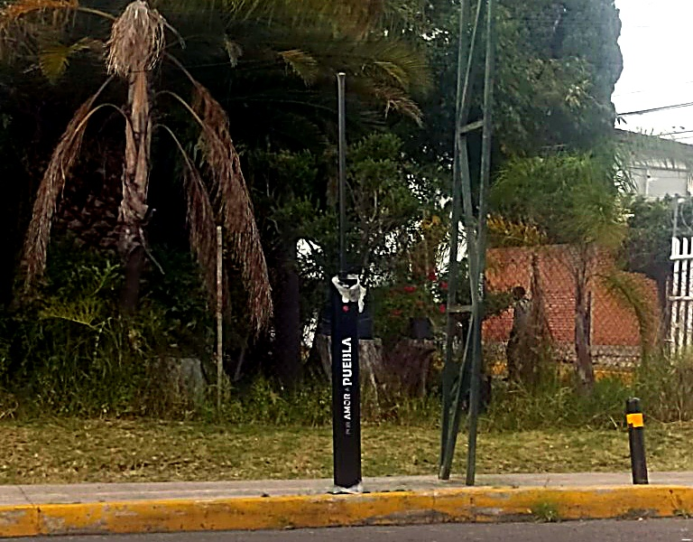

KUCHE Inteligencia Artificial para Alumbrado Público
Facilitamos la recolección de reportes y datos de luminarias en los 217 municipios de Puebla, reduciendo el desperdicio eléctrico diurno, asegurando calles iluminadas para las familias y mitigando fallas futuras con atención ágil en campo.

Gestión Inteligente de Alumbrado y Reducción del Desperdicio
Optimizamos la recolección de reportes y datos de luminarias en Puebla para transformar el mantenimiento reactivo en gestión inteligente: detenemos el desperdicio eléctrico del erario, devolvemos calles seguras e iluminadas a las familias y dotamos a los municipios de información georreferenciada para despachar cuadrillas y mitigar fallas a futuro.
Tiempo Récord de Captura
Reemplaza las bitácoras manuales en papel y llamadas al 072 por una captura fotográfica instantánea en campo. El reporte del fallo en la red urbana queda digitalizado y registrado en menos de 3 segundos.
Estandarización y Calidad del Dato
Sustituye reportes vagos («no sirve la lámpara») por diagnósticos técnicos precisos. La visión artificial clasifica la tecnología de la luminaria (Vapor de Sodio, LED, Colonial) y la avería para despachar la refacción exacta a la primera.
Localización Satelital Precisa (GPS)
Cada captura vincula coordenadas satelitales exactas al poste en el mapa municipal. Las cuadrillas se dirigen directo al punto georreferenciado sin perder combustible ni horas buscando en la calle.
Modelo de Detección de Luminarias a Tiempo Real
Procesamiento de imagen en campo mediante cámaras web: la IA clasifica el tipo de lámpara e identifica la condición horaria (día o noche) para detectar de forma verídica y verificable anomalías operativas en la vía pública.
Alineación con las Bases de ElectroHack 2026
KUCHE responde de manera directa a los lineamientos y áreas prioritarias emitidas por la Agencia de Energía del Estado de Puebla (Secretaría de Desarrollo Económico y Trabajo) en las Bases Oficiales de la Quinta Edición del concurso.
IA en Infraestructura Eléctrica y Smart Cities
Alineado al numeral 7.3 de las bases: Aplicación directa de Inteligencia Artificial para monitorear redes de alumbrado público y transformar las ciudades poblanas en entornos urbanos inteligentes y resilientes.
Machine Learning e IoT en Puntos Estratégicos
Captura geoespacial, inferencia computacional de visión artificial y centralización en base de datos para predecir consumos, evitar sobrecargas y auditar la demanda del mercado eléctrico local.
Escalabilidad según las Necesidades del Estado y sus 217 Municipios
Diseñado para adaptarse flexiblemente a las necesidades operativas tanto del Gobierno del Estado como de cada uno de los 217 municipios de Puebla, funcionando con igual eficacia en zonas metropolitanas de alta demanda como en demarcaciones rurales con conectividad limitada.
Ecosistema Integrado de Tres Módulos
KUCHE combina herramientas especializadas para abarcar desde la captura en campo hasta la gestión directiva de servicios públicos municipales.
Tablero GIS Municipal
Cartografía multi-capa con visualización satelital y mapa de calor de fallas. Permite a los directores de servicios públicos auditar zonas oscuras y despilfarros diurnos en tiempo real.
Aplicación Móvil Desconectada
Herramienta para inspectores y cuadrillas que captura fotografías con sensor satelital GPS. Funciona sin internet mediante base de datos local y sincronización diferida automática.
Portal Cívico con Token OTP
Mecanismo para que presidentes auxiliares y comités vecinales consulten el estatus de sus luminarias reportadas con folios trazables y autenticación blindada sin contraseñas frágiles.